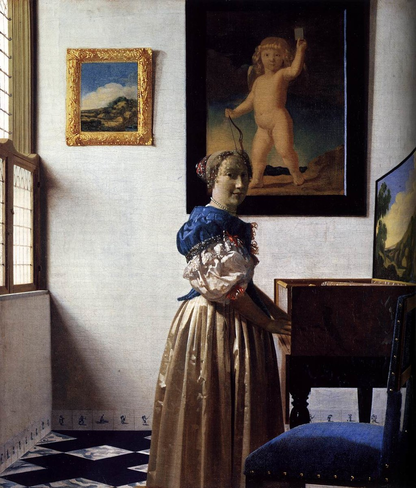

<head>
<meta charset="UTF-8" />
<meta name="keywords" content="drawing, painting" />
<meta name="description" content="drawings by Sunjy" />
<title>Sunjy</title>
<link rel="shortcut icon" type="image/x-icon" href="../../mImages/mCommon/favicon.ico" media="screen" />
<link rel="stylesheet" type="text/css" href="../../mCsses/mCommon/mCssA.css" />
<link rel="stylesheet" type="text/css" href="../../mCsses/mCommon/mCssB.css" />
<link rel="stylesheet" type="text/css" href="../../mCsses/mCommon/mCssC.css" />
<link rel="stylesheet" type="text/css" href="../../mCsses/mCommon/mCssD.css" />
<link rel="stylesheet" type="text/css" href="../../mCsses/mContent/mCssA.css" />
<link rel="stylesheet" type="text/css" href="../../mCsses/mContent/mCssB.css" />
<link rel="stylesheet" type="text/css" href="../../mCsses/mContent/mCssC.css" />
<link rel="stylesheet" type="text/css" href="../../mCsses/mContent/mCssD.css" />
</head>
<script type="text/javascript" src="../../mScripts/mContent/mContentAA.js" /></script>
<script type="text/javascript" src="../../mScripts/mContent/mContentAB.js" /></script>
<script type="text/javascript" src="../../mScripts/mContent/mContentAC.js" /></script>
<script type="text/javascript" src="../../mScripts/mContent/mContentAD.js" /></script>
<script type="text/javascript"></script> 
<script type="text/javascript">
document.write('<div class="mImgAbsolute"></div>');
/*
document.write('<p class="mFontSizeBColor" />From a white paper...</p>');
document.write('<table class="center"><tr><td>');
document.write('');
document.write('</td></tr></table>');
*/
</script>


<script type="text/javascript">
document.write('<p class="mFontSizeBColor" />A Young Woman standing at a Virginal</p>');
document.write('<p class="mFontSizeSColor" />By Johannes Vermeer， 1670. “A Young Woman standing at a Virginal” depicts a richly dressed woman playing the virginal. A virginal was a keyboard instrument of the harpsichord family, which was popular in Europe during the late Renaissance to the 1700s.<br><br>The setting for this composition is a home with a tiled floor, paintings on the wall, and some of the locally manufactured Delftware blue and white tiles of a type that appears in other Vermeer works.<br><br>This painting can be related to another Vermeer painting titled, “Lady Seated at a Virginal,” which is almost the same size, with which it may form a pair. Johannes Vermeer is one of the Netherlands’ most prominent Dutch painters.<br><br>He painted relatively few paintings, most of which had common attributes such as the use of yellow and blue tones, the depiction of women, and domestic settings.<br><br>Vermeer offered glimpses into the lives of Holland’s cultured citizens. Although little is known about Vermeer’s life, historians do know of his baptism and fragments of his life in Delft.</p>');
document.write('<table class="center" /><tr><td>');
document.write('<br>The setting for this composition is a home with a tiled floor, paintings on the wall, and some of the locally manufactured Delftware blue and white tiles of a type that appears in other Vermeer works.<br><br>This painting can be related to another Vermeer painting titled, “Lady Seated at a Virginal,” which is almost the same size, with which it may form a pair. Johannes Vermeer is one of the Netherlands’ most prominent Dutch painters.<br><br>He painted relatively few paintings, most of which had common attributes such as the use of yellow and blue tones, the depiction of women, and domestic settings.<br><br>Vermeer offered glimpses into the lives of Holland’s cultured citizens. Although little is known about Vermeer’s life, historians do know of his baptism and fragments of his life in Delft." />');
document.write('</td></tr></table>');
</script>


